- A purely random process
- A random walk
- Moving average process (MA)
- Autoregressive process (AR)
- Mixed ARMA models
- ARIMA models
What we are doing: models for univariate time series - modeling the residuals.
Back to the correlogram
A key assumption: second order stationarity
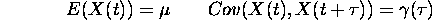
In English: the mean is constant and the autocorrelation depends only on the lag.
A purely random process.
A discrete time process is purely random if it consists of a sequence of random variables 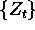 which are mutually independent and identically distributed.
The autocorrelation function is
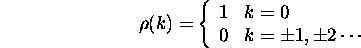
Colloquially known as ``White noise''.
Random Walk
Let be purely random process, mean 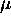 and variance 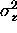 . Then 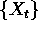 is a random walk if
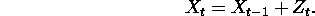
If 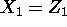 then 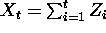 .
Can show that 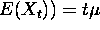 and 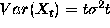 . Mean and variance change with t, therefore non-stationary.
But differences, ie 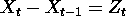 are purely random and therefore stationary.
Example: the market.
Price on day t = price on day (t - 1 ) + noise.
Moving average process
Say is purely random, mean 0 variance . Then is a moving average process of order q ( MA(q) ) if
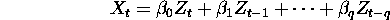
In English a weighted sum of the Z's.
One can show that the autocorrelation function is
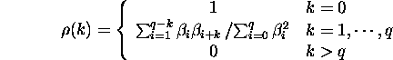
Important point is that it drops off for k > q.
Special case (scale so 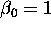 ), an MA(1) process
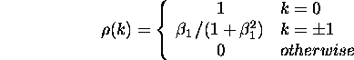
Autoregressive process.
is purely random mean 0, variance . Then a process is autoregressive of order p if
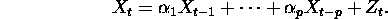
Like a regression, but 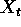 is regressed on previous X's. The present depends on the past plus some error.
Special case AR(1) process.
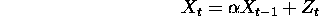
.
It turns out that the AR(1) process is second order stationary if 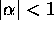 .
The autocorrelation function is
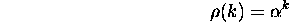
a geometric decline - so look for this in the correlogram.
The Durbin Watson test is a test under the assumption that the process is AR(1), whether or not 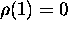 .
Mixed ARMA models.
A combination of an MA and an AR model.
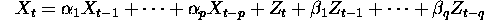
Important because a stationary process may be more simply described through a mixed ARMA model, than a pure MA or AR process.
ARIMA models
For a non-stationary process, (for example a series with trend) we may apply differencing at the start to achieve stationarity on the differenced series. Then apply ARMA models to this differences series.
To get back from the stationary model to a model for the original data you have to undo the differencing, that is to sum (or Integrate). Hence AutoRegressive, Integrated Moving Average model. (ARIMA).